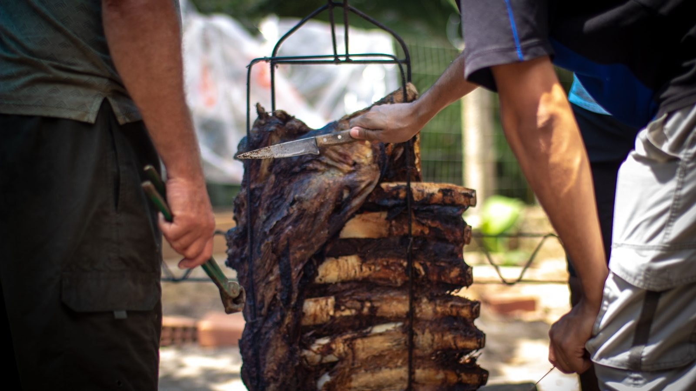

Itapema · Cultura
Itapema · CulturaItapema abre R$ 543 mil em editais de cultura, e a inscrição vai até 13 de setembro
O outro dinheiro da cultura que está em jogo no mesmo mês da festa.
São quatro dias de música, dança e gastronomia tradicionalista no meio da cidade. A Secretaria de Turismo diz que levou a festa para a praça para abrir a porta a quem não é do meio gaúcho.
Em 30 segundos · Modo de Leitura, formato original Santa Informa
A Festa Farroupilha de Itapema acontece de 10 a 13 de setembro, na Praça da Paz.
São quatro dias de música, dança, gastronomia e costumes tradicionalistas.
Dia 10: cavalgada pela Meia Praia levando a Chama Crioula.
Dia 11, a partir das 20h: acendimento da chama, jantar gaúcho e baile.
Sábado, dia 12, a partir das 15h: apresentações no palco, jantar tradicional e baile à noite.
Domingo, dia 13, a partir das 10h: mateada, almoço de costela fogo de chão, apresentações e show de Carlos Magrão. A festa vai até as 20h.
A participação é gratuita e aberta ao público.
A realização é da Prefeitura de Itapema, pela Secretaria de Turismo, com apoio do CTG Tropeiros do Litoral.
TurismoPublicada em Redação Santa Informa

A cultura gaúcha volta a Itapema em setembro, e desta vez no meio da cidade. A Festa Farroupilha acontece de 10 a 13 de setembro na Praça da Paz, com quatro dias de música, dança, gastronomia e costumes tradicionalistas. A programação é da Prefeitura de Itapema, que divulgou a agenda na quinta-feira, dia 20 de agosto.
A abertura é na quinta-feira, dia 10, com a cavalgada pela Meia Praia levando a Chama Crioula. Na sexta, dia 11, a partir das 20h, vem o acendimento da chama, seguido de jantar gaúcho e baile. No sábado, dia 12, a programação começa às 15h, com apresentações no palco, jantar tradicional e baile à noite. O encerramento é no domingo, dia 13, a partir das 10h, com mateada, almoço de costela fogo de chão, apresentações e o show de Carlos Magrão. A festa se despede às 20h.
O endereço é a novidade do ano. A secretária de Turismo, Pati Marin, disse que a escolha da Praça da Paz busca aproximar a festa da população. "Itapema tem muitos gaúchos e famílias que mantêm esses costumes vivos, e queremos valorizar essa história. Levar a Festa Farroupilha para a Praça da Paz também é um convite para toda a cidade participar. Mesmo quem não é gaúcho poderá vir com a família, conhecer um pouco dessa tradição, experimentar a gastronomia e aproveitar a programação", afirmou.
A realização é da Prefeitura de Itapema, por meio da Secretaria de Turismo, com apoio do CTG Tropeiros do Litoral. Segundo a Prefeitura, a participação é gratuita e aberta ao público.
Setembro é mês de respiro no litoral. A temporada passou e a próxima ainda não chegou. Uma festa de quatro dias na praça central mexe com dois públicos ao mesmo tempo: o morador que trouxe o costume gaúcho na mala e o visitante que desce para o mar na Semana Farroupilha. Para restaurante, pousada e banca da região, é movimento a mais fora da alta temporada. Para quem mora perto da Praça da Paz, vale anotar desde já que a praça fica ocupada de quinta a domingo, com baile em duas noites. E, para quem nunca entrou num galpão de CTG, é a chance de conhecer sem precisar de convite nem de bombacha.
O resumo de 30 segundos está no topo e a versão completa é o texto acima. Aqui ficam as três leituras da casa sobre o mesmo assunto.
Clara, a otimista
Tirar a festa do galpão e colocar na praça central muda tudo. Quem passava reto agora atravessa a festa para ir ao mercado, sente cheiro de churrasco e acaba parando. É assim que tradição continua viva, encostando em quem não foi procurar.
E a data ajuda. Setembro é mês de cidade vazia, comércio devagar e fim de semana sem graça. Quatro dias de programação de graça, com música, dança e comida, é um convite bom para família inteira sair de casa.
Seu Prudêncio, o criterioso
Merece atenção o que a nota não diz. A participação é gratuita, e isso está claro. Só que a festa tem jantar gaúcho na sexta, jantar tradicional no sábado e almoço de costela no domingo, e não foi informado se essas refeições são vendidas nem por qual preço. Quem vai levar a família precisa dessa conta antes de sair de casa, e a informação ainda não está no ar.
Vale acompanhar também o efeito de praça ocupada por quatro dias. Baile em duas noites, palco montado e cavalgada de abertura mexem com trânsito, estacionamento e som perto de moradia. Uma sugestão útil: a Secretaria de Turismo publicar com antecedência o trajeto da cavalgada e o horário de encerramento do som em cada noite resolve a maior parte da dúvida da vizinhança antes que ela vire reclamação.
Dito isso, a mudança de lugar é acerto. Festa em espaço público aberto custa menos para o visitante, dispensa portaria e alcança gente que nunca entraria num galpão. E marcar quatro dias em setembro é aproveitar bem o mês mais parado do calendário do litoral.
Caco, o sarcástico
Itapema descobriu que dá para tomar chimarrão com o mar ali do lado. O gaúcho já sabia disso há décadas, só estava esperando a Prefeitura confirmar.
A festa é gratuita, aberta e no meio da cidade. Quem tentar fugir vai ter que sair de Itapema na quinta e voltar na segunda.
Quatro dias de costela, baile e mateada em setembro. É o pré-temporada mais gostoso que a cidade já inventou.
Fontes: Prefeitura de Itapema, nota de 20 de agosto de 2026, com as datas, a programação de cada dia, a fala da secretária de Turismo Pati Marin, o apoio do CTG Tropeiros do Litoral e a informação de participação gratuita. Sobre o dinheiro público que a cidade está pondo em cultura neste momento, veja a matéria dos editais de R$ 543 mil.
Itapema · CulturaO outro dinheiro da cultura que está em jogo no mesmo mês da festa.
 Costa Esmeralda · Cultura
Costa Esmeralda · CulturaOutra agenda gratuita que passa por Itapema antes da temporada.
Como a cidade costuma ocupar a rua quando a temporada não está rolando.